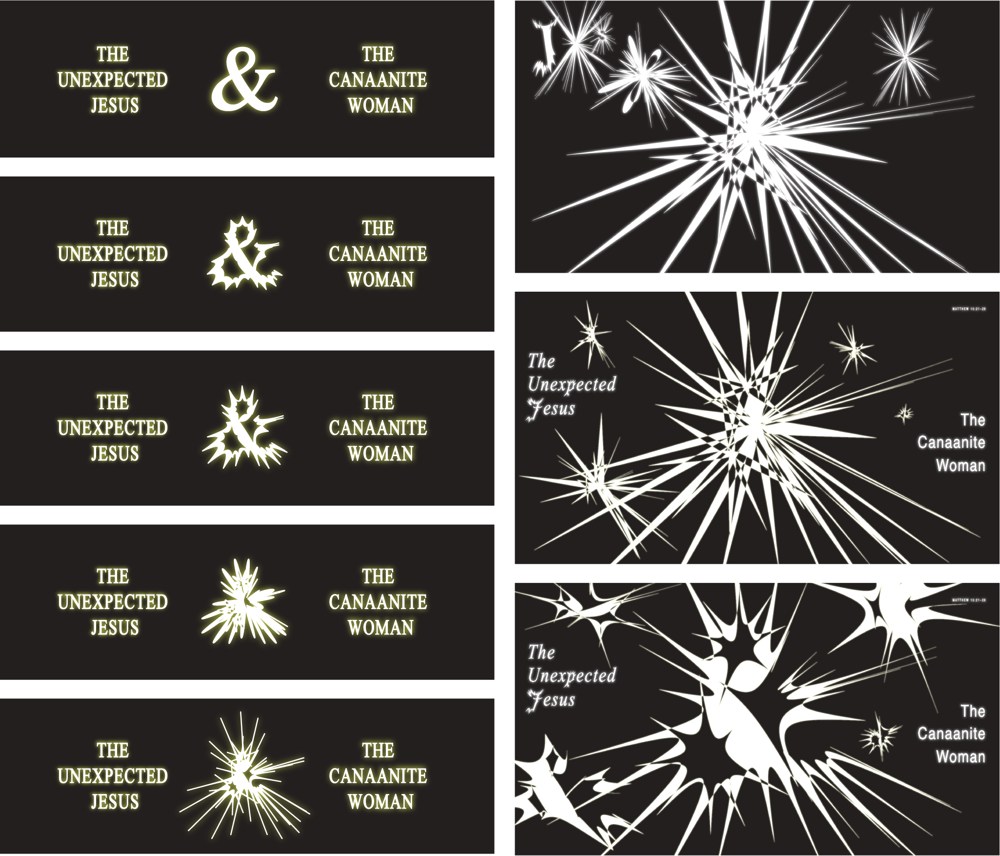
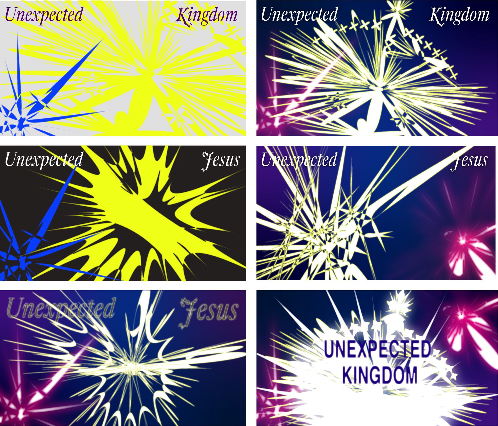
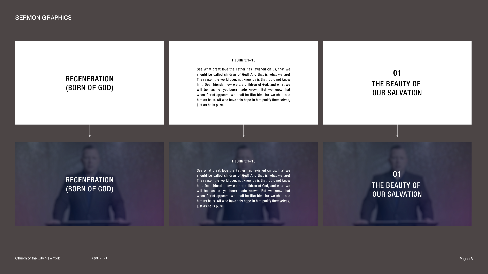
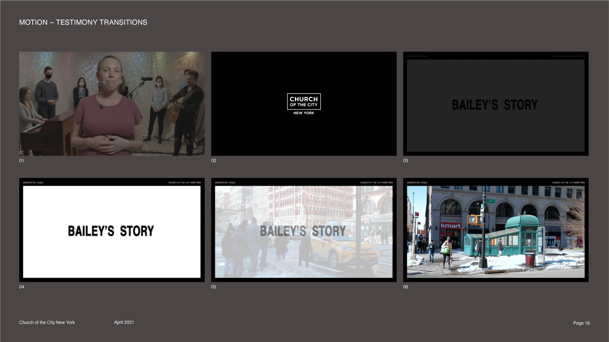
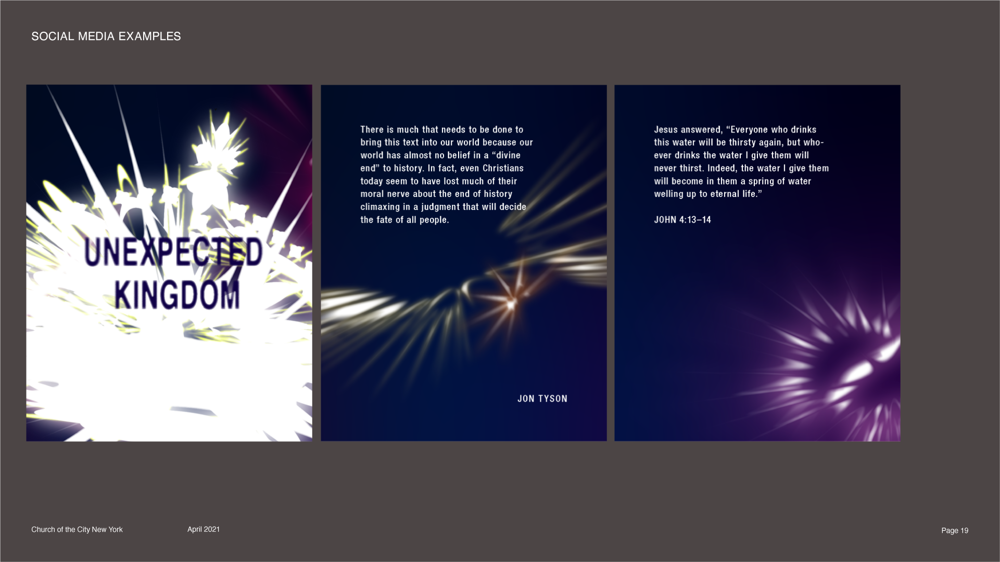

Unexpected Jesus
Unexpected Jesus was a series about encounter and expectation, examining
what happen when God meets man.
The result, in summary, is "glorious explosion." In encounters with
lepers, Jews, Pharisees… we find Jesus bursting apart preconceptions and
worldly systems. Trailing in His wake, we find peeople transfigured—from
blind to seeing, isolation to community, fishermen to fishers of men. To
encounter God's presence is to encounter combustion—a fire refing,
consuming, and enduring. His true presence should leave Christians like
the disciples ont eh road ot Emmaeus, with hearts burning.
The visual concept for this series thus aims to express the fiery
aspects of Jesus' encounters with man. How does He isnpire and provoke
us? What is consumed in full, and what is left behind?
「 Inspiration 1: Cold, Dark, Matter 」
Cornelia Parker's work Cold Dark Matter was made at a time where
explosions seemed to pop up everywhere in pop culture, from cartoons to
news reports of domestic terrorism to militarization in the UK. With
Army Corps, she detonated a garden shed, collected the charred debris,
and suspended them—as if mid-explosion—around a single lightbulb. The
resulting instlalation is a striking examination of domestic ideals,
imagery, and spaces now brutally transformed.

For Christians, sometimes I think when Jesus knocks on the front door,
it's easier to bring him around to the backyard shed. We recongize that
he wants to work in our hearts, but we'd rather he do all his redeeming
work somewhere that matters a little less to us, stored neatly in boxes
of religiosity. The Light of Christ can only exceed these shadows by
their nature.
What would it look like when God explodes our quiet homes, that we may
build a house for him?
「 Inspiration 2: Fireworks 」
I think the immediate temptation with combustion might be leaning too
far into destruction. Throughout the Bible we see exmples of God's glory
exploding in terrifying power—the mountain smokes, fire consumes Aaron's
sons, and Israel falls to the ground in worship… but it doesn't feel
right to characterize these explosions as wanton or sadistic. Just as
God's plagues to teh world are sings and wonders to his people, his
encounters annuhilate our earthly flesh, yet catalyze the birth of new
life.

In this respect, perhaps a more wonderful explosion would be a firework.
Drawing from the works of aritsts like Cai Guo-Qiang, Takashi Murakami,
and countless rom-com anime… what would it look like to create a
celebratory explosion, which communicate sboth the intimacy of encounter
and awe-inspiring might?
「 Exploration 1: Ampersands, Pucker and Bloat Effect 」
As I started mockup slides, I began to type out pairings of Jesus'
encounters. "THE UNEXPECTED JESUS / AND / THE SAMARITAN WOMAN" It struck
me that the "and" in these phrases drew us in connection to God. I began
experimenting with different ways of distorting ampersands which in
themselves began to express both the explosion of a reaction linked ot
its original meaning as a shortened conjunction.

Thus, at its atomic level the series could be a celebration of Jesus
and us. That which connects him to Abraham, Isaac, Jacob, Moses,
Peter, and the Samaritan Woman is offered freely to us. Our
preconceptions can only burst open as old wineskins, yet expectantly as
a tearing of the curtain, fireworks in teh background of a romantic
comeday. And now, standing above th ewreckage of our tidy, domestic shed
is Him with face radiant, to offer us all the terrifying and cathartic
depth of a reationship with the living God—the living God who
beckons us dance with the same power that created the universe and now
somehow burns our hearts. The Unexpected Jesus loves us.
「 Exploration 2: Color / Light Effects 」
I briefly toyed witht eh idea of some highly saturated compostions
before landing on a final direction more reminiscent of a true firework.
Bty applying feather, blur, and glow effects I found it was pretty easy
to generate a dynamic explosion with a few layered vectors.

Since the base vector could be anything, I began to experiment with
"exploding" various cions. Icons in modern using—origianlly intended as
a "univeral language" stemming from Bauhaus and modernist
philosophies—themselves are flat simplifications fo broad and complex
obhjects. If a set of thematic icons could be sourced each week, it felt
appropriate to use them as a representation of our earthly expectations,
now suberted and exceeded by divine presence.
As a final touch, I designed each week's title text as a mask of the
background. Thus the title can only be revealed by explosive encounter.
《 FiNAL CONCEPT (ARTiST STATEMENT) 》
Over the length of the series, "Unexpected Jesus" was visualized as an
eight-part fireworks display. Each week, icons were selected to
represent the theme, then manipulated into an animated explosion. In
this way, images that represent human, simple expectations of Jesus are
overwhelmed into brilliant displays of light.
Alongside the thematic fireworks, explosions based on an ampersand (&)
shape celebrated the conjunction "and" that ties the God of the Bible
with His people and His Church, referencing the roots of all revelation
within relationship.
Our conceptions, like unexploded firecrackers, often hint little at the
true nature of a living Christ. It is only once they are exceeded by
encounter that we get a glimpse of His true glory.
《 IDENTITY COMPONENTS 》
To continue with the firework concept, much of the other graphic
elements of this series borrow from the visual language of film, which
constantly manipulates and captures light. Text had blur and scale
effects applied to simulate a more analog film feeling, while light
leaks and other film artifacts subtly reemphasize the reference.
「 Typography 」
For a visual system with so much dynamic movement, effects, and moving
parts, Helvetica felt like the right choice for something solid,
legible, and space-saving.

「 Color 」
As general guidance, text was always white or black (on light
backgrounds), as reference to the more straightforward setting of text
on analog film. Colors should only be used in firework graphics, as
applied to outer glows to blurred/white vectors.

「 Fireworks 」
Fireworks were based on vector shapes that are puckered or bloated with
various light effects, then layered to make a glowing explosion.

《 WEEKLY TITLES 》
The hero deliverable of this series was a series of animated sermon
titles I made, envisioned as an eight-part fireworks display. Each
weeks' theme was expressed through Noun-project icons, then manipulated
into explosion in After Effects.
︿參﹀
｢ Unexpected Kingdom ｣
A crown to imply kingdom and kingship, with two ampersands to
introduce the concept
︿參﹀
｢ Unexpected Extravagance ｣
We illustrated rest here as a comfortable, organize haze, while
exhuastion is shown as a sharp and granular over-extension—what
Tolkien describes in the Hobbit as "too little butter spread over too
much bread."
︿參﹀
｢ No Quid Pro Quo ｣
We illustrated rest here as a comfortable, organize haze, while
exhuastion is shown as a sharp and granular over-extension—what
Tolkien describes in the Hobbit as "too little butter spread over too
much bread."
︿參﹀
｢ Unexpected Visitation ｣
We illustrated rest here as a comfortable, organize haze, while
exhuastion is shown as a sharp and granular over-extension—what
Tolkien describes in the Hobbit as "too little butter spread over too
much bread."
︿參﹀
｢ Unexpecteed Peace ｣
We illustrated rest here as a comfortable, organize haze, while
exhuastion is shown as a sharp and granular over-extension—what
Tolkien describes in the Hobbit as "too little butter spread over too
much bread."
︿參﹀
｢ Unexpected Faithfulness ｣
We illustrated rest here as a comfortable, organize haze, while
exhuastion is shown as a sharp and granular over-extension—what
Tolkien describes in the Hobbit as "too little butter spread over too
much bread."
︿參﹀
｢ Unexpected Inclusion ｣
We illustrated rest here as a comfortable, organize haze, while
exhuastion is shown as a sharp and granular over-extension—what
Tolkien describes in the Hobbit as "too little butter spread over too
much bread."
︿參﹀
｢ Unexpected Change ｣
We illustrated rest here as a comfortable, organize haze, while
exhuastion is shown as a sharp and granular over-extension—what
Tolkien describes in the Hobbit as "too little butter spread over too
much bread."
Since services were still virtual, each of these animated titles played
before the sermon began. They were followed by a held still which
included a short artist's statement, with ghosted versions of the
original icons.
「 Other Deliverables 」
As part of the sermon identity, I also included guidance for various
video aspects of Virutal Worship for the length of the series. This
included overlays for different sections of worship, transitions for
some planned "video testimonies," overlaid sermon graphics, and a
template for social media.



I included this guidance in a Sermon Concept and Visual Identity
deck which you can access here. A shared Google Drive Folder was created
for all of these assets, with weekly updates for new motion and social
media assets.
《 CLOSING THOUGHTS 》
This series visually captured many references I'd been holding onto for
years—
From a work perspective, It's probably my most motion-heavy project yet.
I learned a ton about After Effects—watching many tutorials and refining
my technique until I could animate the weekly titles in about an hour
and a half. I also quickly learned the limits of my computer's memory :/
At the end of hte day, there are many things i'm rpoud of from this
project. The newness of techniques I discovered in Illustrator and After
Effects… the way the rest of the identitiy fell into place around the
medium of light the conceptual depth inr eferences I'd held onto for
years.
Often with church work, I've wondered if there will be a point where
I've exhausted all of my creativity and I'm unable to summon something
truly fresh and living. At what point might I develop an "indiivudal
style," or start mindlessly replicating the same techniques—only with
new typefaces and colors? In that way, this series felt like a return to
inspired form. New techniques in Illustrator and After effects, an
ambitious set of weekly deliverables… and a broader (yet tighter) visual
system were a process full not just of learning, but of new and lviing
energy.
I've realized that when I visit museums, or even consume media—I'm
constantly mentally bookmarking references for inspiration. This was one
of the cases where it felt like the stars aligned and just the right
references came through. Over the course of a few brainstorm meetings I
began to write notes… which ultimately coalesced into final form.
Thus, at its atomic level the series could be a celebration of Jesus
and us. That which connects him to Abraham, Isaac, Jacob, Moses,
Peter, and the Samaritan Woman is offered freely to us. Our
preconceptions can only burst open as old wineskins, yet expectantly as
a tearing of the curtain, fireworks in teh background of a romantic
comeday. And now, standing above th ewreckage of our tidy, domestic shed
is Him with face radiant, to offer us all the terrifying and cathartic
depth of a reationship with the living God—the living God who
beckons us dance with the same power that created the universe and now
somehow burns our hearts. The Unexpected Jesus loves us.